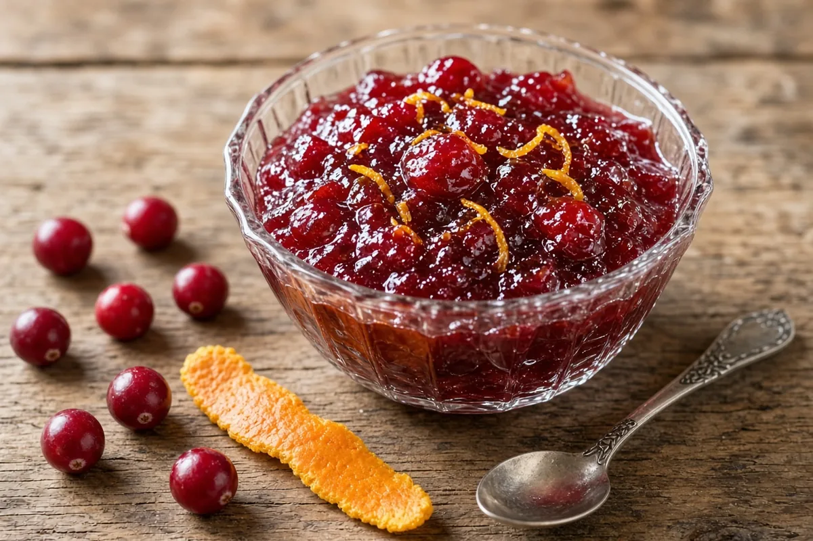

Cranberry-Orange Sauce
Bright cranberry-orange sauce with fresh zest and juice, not too sweet, that sets up as it cools. Make it a day or two ahead for Thanksgiving.

8 servings
By
Yield: about 2 1/2 cups (8 servings)
Prep:
Cook:
Cool and chill: 30 to 45 minutes at room temperature, then at least 2 hours in the fridge (not counted in the total)
Total:
Difficulty: Easy
Ingredients
- 1 bag (12 oz) fresh or frozen cranberries, rinsed and picked over
- 1 cup granulated sugar
- 1 large navel orange, zested and juiced (about 1/2 cup juice; top up with water if short)
- 1/4 cup water
- 1 pinch salt
Instructions
- In a medium HexClad saucepan (2 to 3 quarts), stir together the sugar, orange juice, water, and salt. Bring to a simmer over medium heat, stirring until the sugar dissolves, about 2 minutes.
- Add the cranberries and orange zest. Return to a simmer, 1 to 2 minutes, then lower the heat to medium-low.
- Cook 10 to 12 minutes, stirring now and then, until most of the berries have popped and the sauce coats a spoon. Mash a few berries against the pot if you want it thicker. If the pot looks dry before most berries pop, add 1 to 2 tablespoons water. If it is still watery after 12 minutes, cook 2 to 3 minutes more.
- Take the pan off the heat and let the sauce cool to room temperature, 30 to 45 minutes. It will look loose while hot but thickens a lot as it cools.
- Refrigerate covered at least 2 hours, or up to 10 days.
Notes: Make it a day or two before Thanksgiving; the flavor improves. For a tarter sauce, use 3/4 cup sugar. Taste it once it has cooled, because heat dulls sweetness. Frozen cranberries go in straight from frozen and may need 1 to 2 extra minutes.